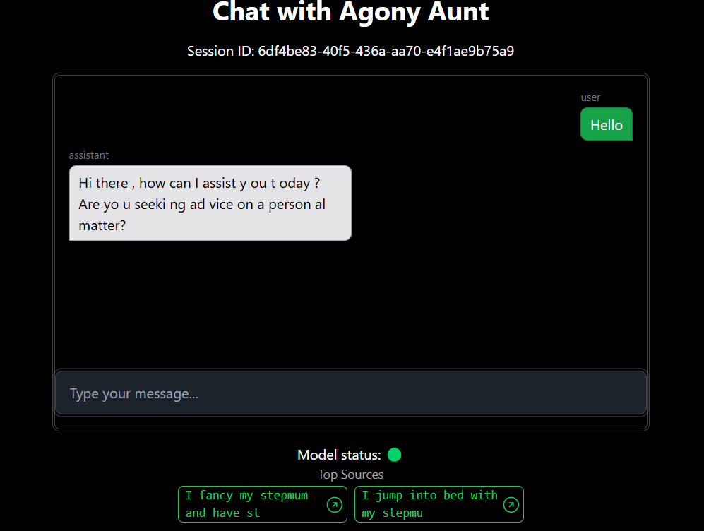
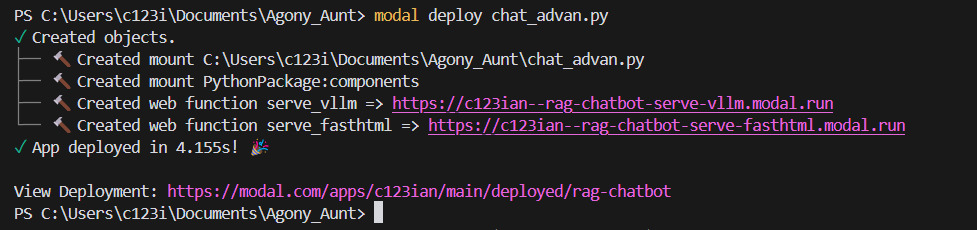

The therapeutic effectiveness of artificial intelligence-based chatbots led me to look at uisng agony aunts to inform a LLM chatbot on their answers!
This article demonstrates how to create a production-grade LLM that uses RAG to retrieve relevant ‘Agony Aunt’ articles to inform LLM’s life/relationship advice. The aim is to show the relevant components so anyone can swap in their LLM, with or without RAG. Instead of using OpenAI API or Claude, this project allows swapping in/out any open source model (e.g., LLAMA 3.2). This project merges this template and Modal Labs OpenAI-compatible LLM inference with LLaMA 3.1-8B and vLLM turtorial which also links to full code here.
You can download the full code here🔗 and the dataset used for RAG here📊.
You can also interact with my own deployment here💬.

The Stack
Backend
For the backend, we’re using Modal Labs for hosting because it enables local development with easy cloud/GPU cluster deployment using Python decorators. Modal Labs scales effectively with user growth through additional GPU container instances and offers transparent pricing with a generous starter free tier providing $30/week of compute. When using smaller LLMs, we can utilize CPUs, which are considerably cheaper than GPUs.
The backend architecture incorporates an OpenAI-compatible serving API structure using industry-standard FastAPI interaction. We utilize SQLite, which comes built into Python, for fast, direct database access and conversation history storage tied to cookie session IDs. For the engine, we’ve chosen vLLM, which leverages Page Attention for all LLAMA-compatible models, ensuring fast output.
Frontend
Our frontend implementation uses FastHTML (with Tailwind CSS) for hypermedia-driven app development, rather than JavaScript. While there are excellent YouTube resources and books available on this approach, don’t worry if you’re unfamiliar with this development style – I’ll show you how to modify elements like buttons or colors.

Data Collection and Context
The role of an agony aunt is fundamentally about helping people clarify their options and choices. The act of writing to an agony aunt allows individuals to think through their choices and receive reassurance. Agony aunts provide a unique form of objectivity that we often can’t get from close friends.
A crucial aspect of the agony aunt role is that they don’t act as moral judges of others’ behavior. They understand that life rarely presents black-and-white situations, instead operating in shades of grey. Our data source for this project comes from here.
The Agony Aunt dataset ‘Question’ column is a letter written to the agony aunt and their response/advice is saved in ‘Answer’ column.
| ID | Data Original Text | Data Headline | URL | Question | Answer |
|---|---|---|---|---|---|
| 30792701 | BIG BULLY | I’m sick of being bullied and belittled by my… | https://www.thesun.co.uk/dear-deidre/30792701/ | MY dad was a bully and drove me to alcoholism…. | Your relationship sounds abusive. Find a quiet… |
| 30764398 | NOT APPY | Online dating is a mystery to me and no matte… | https://www.thesun.co.uk/dear-deidre/30764398/ | I’VE tried so many dating apps but my profile … | Online dating is very much focused on appearan… |
| 30730867 | SO HOPELESS | I’m 25 but my father won’t allow me any freed… | https://www.thesun.co.uk/dear-deidre/30730867/ | MY father treats me worse than an animal. I’m … | Family can be the perpetrators of domestic abu… |
Just to note on the dataset, I plan to get more diverse sources but currently its all from a tabloid called The Sun. Sometimes agony aunt writer refers to an e-leaflet for more detailed guidance on a topic, this is not included in the dataset. Also, this is a UK column and there was a law going through parliament resulting in agony aunts who give advice to teenagers being liable to prosecution, so this may affect agony aunts reponses to sex advice!
Prompt Testing
Our prompt development was grounded in the agony aunt’s characteristic neutral stance and the necessity to reference context. We used Anthropic’s Claude prompt as a starting point. For those seeking additional prompt resources, the LangSmith Prompt Hub offers various prompts for different models and use cases, including RAG implementations.
The testing process involved iterative adjustment, deployment, and output verification to ensure the responses maintained the appropriate tone and utility. But didn’t go beyound vibe testing so defiinetly room for improvemet here.
Token Management
After signing up to Modal labs the setup process begins with API token configuration in your chosen virtual enviroment. Navigate to Settings > API Token > Generate, where you’ll receive a key to use with a command like modal token set --token-id ak-XXXx --token-secret as-YYYY.Just FYI it’s important to distinguish between API Tokens and Secrets. For secrets, you can either use the web interface at https://modal.com/secrets/c123ian/main/create?secret_nam, choosing custom > input value and name, or use the command line: modal secret create my-custom-secret-2 YOUR_KEY=333. In your code, you’ll reference this using secret = modal.Secret.from_name("irish-chatbot-secret").
For Hugging Face integration, set up the token using:
modal secret create huggingface-token-3 HUGGINGFACE_TOKEN="hf_FxxxxxxxxxxxxxxxxxxxxxXl"In your code, implement it as follows:
hf_token_secret = modal.Secret.from_name("huggingface-token")
@app.function(secrets=[modal.Secret.from_name("huggingface-token")])
def some_function():
os.getenv("HUGGINGFACE_TOKEN")Selecting LLM and dataset
Make changes on the main app, but also reflect tthese changes on your download_model.py and download_faiss_data.py
MODELS_DIR = "/llama_mini" # Name of Volume we created via script
MODEL_NAME = "Llama-3.2-3B-Instruct" # Matches model name from HuggingFace, so we know where to find weight/tokenizer
FAISS_DATA_DIR = "/faiss_data" # Name of Volume we created via script (RAG)
EMBEDDING_MODEL_NAME = "BAAI/bge-small-en-v1.5" # Can use any, reduces the dimenional space (RAG)
USERNAME = "c123ian" # Modal labs usernaame
APP_NAME = "rag-cha"# Can use any name here to appear on Modal Labs dashboard
DATABASE_DIR = "/db_data" # Database directory
db_path = os.path.join(DATABASE_DIR, 'chat_history.db') # To store conversation historyScripts & Volume Management
Once you have chosen your model and dataset to use, will run the two scripts that download the dataset onto a Volume for persistant storage and index the dataset uisng FAISS (though I havent tested it you could also try LlamaIndex).
- (optional) Downloading the database (if exists yet, otherwise its generated in the main app code later)(
modal volume get db_data /chat_history.db), or see theinspect_db.ipynbnotebook. - Run the pre-requist scripts for downloading the model (
modal run download_model.py) and creating the FAISS index (modal run download_faiss_data.py). Recall my code points toc123ian/dear_deidre_agony_auntHuggingface dataset to be downloaded and indexed.
- Run the pre-requist scripts for downloading the model (
- Deploying the app (
modal deploy app_name.py) and click the displayed fasthtml URL, for example mine is `https://c123ian–rag-chatbot-serve-fasth”Modal Demo”/>

To inspect your Volumes after running the scripts, start with:
modal volume listto see all created volumes.
┏━━━━━━━━━━━━━━━━━━━━━━━━━━━┳━━━━━━━━━━━━━━━━━━━━━━━━━━━━━━━━━━━━┓
┃ Name ┃ Created at ┃
┡━━━━━━━━━━━━━━━━━━━━━━━━━━━╇━━━━━━━━━━━━━━━━━━━━━━━━━━━━━━━━━━━━┩
│ llama_mini │ 2024-09-23 12:31 GMT Standard Time │
│ faiss_data │ 2024-10-04 13:18 GMT Standard Time │
│ db_data │ 2024-10-31 09:56 GMT Standard Time │
└───────────────────────────┴────────────────────────────────────┘- Then you can then examine specific volumes with commands like
modal volume ls llama_mini, which should show safetensors and config files. Safetensors represents a new format for storing tensors safely compared to pickle, while maintaining speed through zero-copy operations.
┏━━━━━━━━━━━━━━━━━━━━━━━━━━━━━━━━━━┳━━━━━━┳━━━━━━━━━━━━━━━━━━━━━━━━━━━━━━━━━━━━┳━━━━━━━━━━━┓
┃ Filename ┃ Type ┃ Created/Modified ┃ Size ┃
┡━━━━━━━━━━━━━━━━━━━━━━━━━━━━━━━━━━╇━━━━━━╇━━━━━━━━━━━━━━━━━━━━━━━━━━━━━━━━━━━━╇━━━━━━━━━━━┩
│ .cache │ dir │ 2024-09-23 12:31 GMT Standard Time │ 11 B │
│ tokenizer_config.json │ file │ 2024-10-01 12:09 GMT Standard Time │ 1.9 KiB │
│ tokenizer.model │ file │ 2024-10-01 12:09 GMT Standard Time │ 545.5 KiB │
│ tokenizer.json │ file │ 2024-10-01 12:09 GMT Standard Time │ 2.0 MiB │
│ special_tokens_map.json │ file │ 2024-10-01 12:09 GMT Standard Time │ 551 B │
│ generation_config.json │ file │ 2024-10-01 12:09 GMT Standard Time │ 183 B │
│ config.json │ file │ 2024-10-01 12:09 GMT Standard Time │ 674 B │
│ README.md │ file │ 2024-10-01 12:09 GMT Standard Time │ 3.0 KiB │
│ .gitattributes │ file │ 2024-10-01 12:09 GMT Standard Time │ 1.5 KiB │
│ model.safetensors │ file │ 2024-10-01 12:06 GMT Standard Time │ 4.1 GiB │
│ TinyLlama_logo.png │ file │ 2024-10-01 12:06 GMT Standard Time │ 1.8 MiB │
│ model.safetensors.index.json │ file │ 2024-09-23 12:35 GMT Standard Time │ 29.2 KiB │
│ model-00011-of-00011.safetensors │ file │ 2024-09-23 12:35 GMT Standard Time │ 2.8 GiB │
│ model-00010-of-00011.safetensors │ file │ 2024-09-23 12:35 GMT Standard Time │ 4.6 GiB │
│ model-00009-of-00011.safetensors │ file │ 2024-09-23 12:34 GMT Standard Time │ 4.6 GiB │
│ model-00008-of-00011.safetensors │ file │ 2024-09-23 12:34 GMT Standard Time │ 4.5 GiB │
│ model-00007-of-00011.safetensors │ file │ 2024-09-23 12:34 GMT Standard Time │ 4.5 GiB │
│ model-00006-of-00011.safetensors │ file │ 2024-09-23 12:33 GMT Standard Time │ 4.5 GiB │
│ model-00005-of-00011.safetensors │ file │ 2024-09-23 12:33 GMT Standard Time │ 4.6 GiB │
│ model-00004-of-00011.safetensors │ file │ 2024-09-23 12:32 GMT Standard Time │ 4.6 GiB │
│ model-00003-of-00011.safetensors │ file │ 2024-09-23 12:32 GMT Standard Time │ 4.6 GiB │
│ model-00002-of-00011.safetensors │ file │ 2024-09-23 12:32 GMT Standard Time │ 4.6 GiB │
│ model-00001-of-00011.safetensors │ file │ 2024-09-23 12:31 GMT Standard Time │ 4.6 GiB │
└──────────────────────────────────┴──────┴────────────────────────────────────┴───────────┘Main Application Structure
The application architecture consists of two primary components: the backend serve_vllm() and frontend serve_fasthtml(). The backend creates an OpenAI-compatible API endpoint for LLM inference using vLLM, handling model/tokenizer loading, initialization, completions endpoint with streaming support, and managing sampling parameters and response generation.
The frontend implements a web interface with WebSocket support for real-time chat, integrating RAG using FAISS for semantic search of advice columns. It manages chat sessions and history through SQLite, handles retrieval and incorporation of relevant context, implements UI with status indicators and source attribution, streams responses from the vLLM server to the web interface, and displays top sources with similarity scores.
GPU Selection and Pricing
Modal Labs currently offers several GPU options with varying price points:
At the time of writing the prices for GPUs on Modal Labs are:
| Resource Type | Specification | Price |
|---|---|---|
| GPU | Nvidia H100 | 4.56/h |
| GPU | Nvidia A100, 80 GB | 3.40/h |
| GPU | Nvidia A100, 40 GB | 2.78/h |
| GPU | Nvidia A10G | 1.10/h |
| GPU | Nvidia L4 | 0.80/h |
| GPU | Nvidia T4 | 0.59/h |
| CPU | Physical core (2 vCPU equivalent) | 0.135/core/h |
| Memory | RAM | 0.024/GiB/h |
Note: Minimum of 0.125 cores per container
A typical configuration might look like this:
@app.function(
image=image,
gpu=modal.gpu.A100(count=1, size="40GB"),
container_idle_timeout=10 * 60,
timeout=24 * 60 * 60,
allow_concurrent_inputs=100,
volumes={MODELS_DIR: volume},
)The configuration requires careful balance between cold boot wait time and GPU active time, considering both cost optimization and user experience. We implement a status indicator during model/GPU warmup to keep users informed of progress.
API Integration
We’ve adopted OpenAI’s API standard, which is well-supported by open-source frameworks like vLLM. The implementation includes two key endpoints: /completions for single prompt completion (which we used) or /chat/completions for dialog responses with specific message history format. For those migrating from older implementations, a helpful guide is available at https://help.openai.com/en/articles/7042661-moving-from-completions-to-chat-completions-in-the-openai-api.
RAG Implementation
Our RAG implementation follows a straightforward process: it ranks similarity between user input and the ‘Question’ column, selects top k similar questions, and passes the corresponding ‘Answer’ column content as context. The interface displays the top 2 sources in the GUI for transparency.
We use FAISS for dense retrieval, which retrieves documents based on vector representations and performs nearest neighbors search. Embeddings reduce the high-dimensional space of language (millions of possible words) into a dense vector space (typically hundreds or thousands of dimensions) while preserving semantic relationships. The system converts vectors to searchable code words and uses upside-down indexing for similar results, with support for reranking based on exact vector comparisons. Detailed documentation is available at https://huggingface.co/docs/datasets/v2.14.1/en/faiss_es#faiss.
The indexing process with FAISS involves indexing dense vectors for fast nearest neighbor searches, using vector quantization for efficient storage, and optimizing similarity computations. When considering model selection, traditional RAG often employs sequence-to-sequence models like BART or T5, which are specifically trained for input-to-output transformation and naturally fit the question-context-answer pattern. However, language models like GPT can be adapted for RAG with proper input formatting, despite being primarily trained for next-word prediction.
Future RAG Challenges to Address
Several challenges remain in our implementation. First, LLMs struggle with multiple retrieved documents, showing best accuracy when the answer is in the first document, decent accuracy when it’s in the last document, but poor accuracy when it’s in the middle. Additionally, LLMs may not effectively recognize irrelevant documents and tend to generate answers regardless of context quality.
To address these limitations, we’re exploring information retrieval techniques including BM25 with boosting queries, recommender system ranking/filtering, and retrieval evaluation metrics. Additional improvements under consideration include two-stage retrieval, BM25 filtering, NDCG evaluation, relevance thresholds, and improved RAG training with irrelevant context.
SQLite Databse for Conversation History and Evaluation.
Our database implementation focuses on storing conversation history for LLM context awareness, utilizing a Conversation() class in SQLAlchemy with a matching database schema and session management. Without passing the conversation history keeping it persistant, our model would forget after every user message (so not very helpful).
The conversation history implementation uses SQLite with SQLAlchemy ORM, structured to maintain persistent chat sessions while efficiently managing temporary request data. Here’s the database ouce created and used should look something like this:
| Message ID | Session ID | Role | Content | Top Source Headline | Top Source URL | Cosine Sim Score | Created At |
|---|---|---|---|---|---|---|---|
| 1f498b5f-abe3-4237-b478-05757e94a373 | 25ee7bc3-227c-4db0-a8f4-a224fd7eeb83 | user | well | None | None | NaN | 2024-11-14 09:38:22.430858 |
| ede9d15f-4c26-4264-95b1-867bbd023f63 | 25ee7bc3-227c-4db0-a8f4-a224fd7eeb83 | assistant | I sense some uncertainty about something going on without clear answers. Can any aspects come together? | I’m seeing a married man and his double life means my needs come last | https://www.thesun.co.uk/dear-deidre/21845342/married-man-double-life-needs-come-last/ | 0.388162 | 2024-11-14 09:38:23.177000 |
| 3e2172dd-eceb-4864-8d1e-91bf0e6b306f | 25ee7bc3-227c-4db0-a8f4-a224fd7eeb83 | user | ok | None | None | NaN | 2024-11-14 09:38:27.179002 |
| 18282b76-70eb-4934-b262-bcc810c6ccd1 | 25ee7bc3-227c-4db0-a8f4-a224fd7eeb83 | assistant | You’ve shared there may have been issues within this particular situation but don’t feel like sharing all details yet; Is anything bothering particularly enough so cannot focus at present? | My life has been torn apart by my son being accused of rape | https://www.thesun.co.uk/dear-deidre/29795950/son-accused-of-rape-scared/ | 0.370166 | 2024-11-14 09:38:27.908870 |
The corresponding SQLAlchemy model:
class Conversation(Base):
__tablename__ = 'conversations_history_table_sqlalchemy_v2'
message_id = Column(String, primary_key=True)
session_id = Column(String, nullable=False)
role = Column(String, nullable=False)
content = Column(String, nullable=False)
top_source_headline = Column(String)
top_source_url = Column(String)
cosine_sim_score = Column(Float)
created_at = Column(DateTime, default=datetime.datetime.utcnow)Notice we match up the datatypes and column names to match the SQL table. We can inspect its contents via the inspect_db.ipynb notebook. Also, we also save the similarity score Cosine Sim Score used to gather the most relevant Answers using RAG. We could use this to evaluate how well the retrival of relavnt documents is going, perhaps also implement a cutoff so not ebvery article is passed to the LLM via the context parameter.
We generate a truley unique Message ID for every row (acts as primary key) while Session ID has a one-to-many relationship beacause it signifies the conversation (which can have multiple messages back and forth), changing only after a browser refresh (new conversation).
Just to be aware in the code there is another uuid request_id, this is used internally by vLLM.
Chat Template, Or Lack Therof
Chat templates are often a Jinja2 file that specifies how are roles, messages, and other chat-specific tokens are encoded in the input. vLLM community provides a set of chat templates for popular models.
But we are using vLLM’s OpenAIServingChat with chat_template=None. When chat_template is not specified, the responsibility of formatting the prompt falls on your application code. For example were handling the prompt formatting ourselves through your build_prompt() function:
def build_prompt(system_prompt, context, conversation_history):
return f"""{system_prompt}
Context Information:
{context}
Conversation History:
{conversation_history}
Assistant:"""The build_conversation is responsible for manually formatting the conversation history.
Models are generally robust enough to handle variations in input formatting. The prompt structure (in our code ending with “Assistant:”) provides enough context for the model to understand its role.
Model Integration Considerations
When integrating new models, pay special attention to max_position_embeddings, which determines fixed sequence length capacity. This often needs adjustment according to model specifications (typically 4096 or 8096). Additionally, verify Page Attention/vLLM compatibility by checking the supported models list, memory requirements, and performance implications for your specific use case.
LLM Output
There are a few approaches to take on generating LLM text output and how we display it to the user. I have another implementation Irish Tutor which uses HTMX polling to constantly check from a complete message. For user experience this means the complete paragraph suddenly appears, while I rather have the text appear as its generated (the illusion of teh LLM writing). However one drawback is its much more difficult to ensure the output is clean, which is why we have the buffer.
The chat_advan_v2_buffer.py is the most recent version, incoporates a buffer system for cleaner LLM output streams. However, edge case still occurs where spacing is sometimes ommited. For example ‘What’s onyourmind?’ which should be ‘What’s on your mind?’.